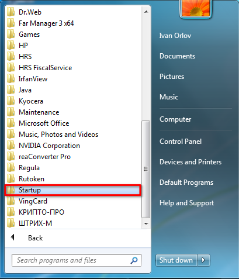
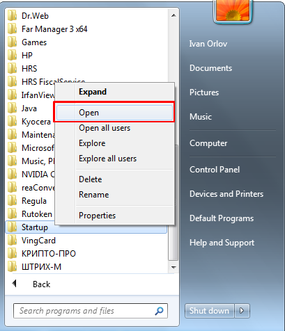
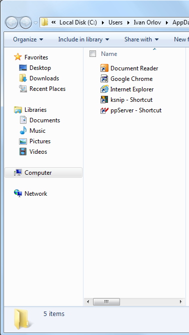

Инструкция актуальна для FO1 и FO2, где установлена ОС Windows 7.
Открываем меню "Пуск", где находим папку "Startup"

Жмём по папке правой кнопкой мыши, выбираем пункт "Open"

Копируем сюда ярлыки тех программ, которые должны запускаться автоматически при входе в учётную запись: Document Reader, Google Chrome, Internet Explorer, ppServer.
